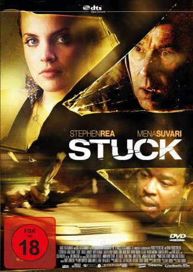

#4245 Stuck
 
 IMDB-Wertung: 6.5 / 10
IMDB-Wertung: 6.5 / 10  Metascore: 0
Metascore: 0 
Krankenschwester Brandi (Mena Suvari) fährt nach einem Disco-Besuch – aufgeputscht durch Alkohol und Drogen – nach Hause. Auf einer einsamen Landstraße übersieht sie einen Mann (Stephen Rea), den sie mit voller Wucht erwischt. Schwer verletzt schlägt der Fußgänger in der Windschutzscheibe ihres Wagens ein und bleibt dort regungslos liegen. Geschockt und scheinbar unfähig zu helfen fährt sie mit dem Unfallopfer nach Hause, um sich dort in aller Ruhe zu überlegen, was zu tun ist. Noch ahnt sie nicht, dass der verletzte Mann wieder bei Bewusstsein ist und es für Brandi schon bald ums nackte Überleben gehen wird…
Jahr: 2007
Dauer: 85 Minuten
FSK: 18
Land: Kanada Studio: THINKFilmTonspuren: DTS - ,
Untertitel:
Auflösung: 1080p (1920x1040) Größe: 5160 MB
Genre: Krimi, Drama, Thriller
Regisseur: Stuart Gordon
Drehbuch: François Dupeyron
Soundtrack:
Darsteller:
 Mena Suvari als Brandi Boski
Mena Suvari als Brandi Boski Stephen Rea als Thomas Bardo
Stephen Rea als Thomas Bardo Russell Hornsby als Rashid
Russell Hornsby als Rashid Rukiya Bernard als Tanya
Rukiya Bernard als Tanya Wayne Robson als Mr. Binckley
Wayne Robson als Mr. Binckley- Patrick McKenna als Joe Lieber
 Sharlene Royer als Tiffany
Sharlene Royer als Tiffany- Shuko Akune als Hospital Voice Menu
- John Dunsworth als Cabbie
 Jeffrey Combs als 911 Operator
Jeffrey Combs als 911 Operator- Carolyn Purdy-Gordon als Petersen
- Lionel Mark Smith als Sam
- R.D. Reid als Manager
- Bunthivy Nou als Gloria
- Suzanne Short als Receptionist
- Wally MacKinnon als Beat Cop
- John Dartt als Cop
- Liam McNamara als Thin Young Man
- Marguerite McNeil als Mrs. Pashkewitz
- Martin Moreno als Pedro
- Lorena Rincon als Estela
- Mauricio Hoyos als Luis
Datei: X:\FSK18-2000-2009\Stuck (2007, FSK18, 1920x1040).mkv seit 26.08.2016
Festplatte: FSK18
 Es gibt insgesamt 106 Filme in der Gruppe 'FSK18-2000-2009'
Es gibt insgesamt 106 Filme in der Gruppe 'FSK18-2000-2009'